River Stream
The constant flow of the river reminds me of the persistence required in research. Calm on the surface, but full of complex dynamics underneath.
A curated collection of experiments, field work, and observations.

The constant flow of the river reminds me of the persistence required in research. Calm on the surface, but full of complex dynamics underneath.

We reached at this point after an hour of trekking, we were convinced it would take just ten more minutes—only to discover another mountain ahead. We finally reached after two hours from there.

Jeetu, me, and a few glimpses of the campus. Captured by Pradeep, resting after completing the starting trail.
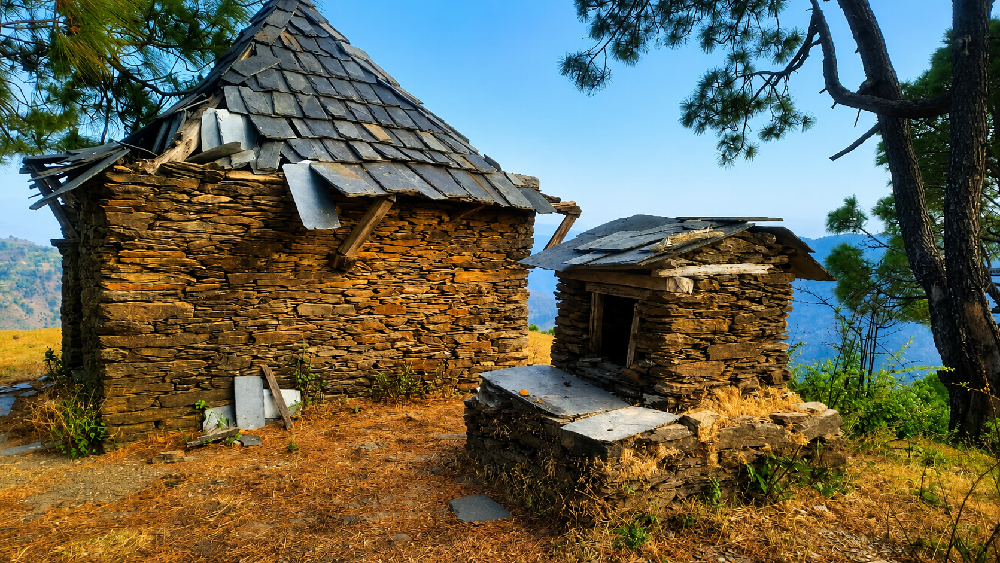
Temple at the top. Khani Peak. Gradient breeze hitting us, sweat cooling, exhausted. Eating the flowers, eating anything. Highs. Tops. Other peaks sharp and clear. Seeing everything. Everything, but Campus.

This is the Uhl River — the chilled one. Walls of water. The pressure of it against the body. That freezing impact almost feels like a glimpse of the ultimate truth of what comes afterwards, especially after the recent incident at this very place. The falling temperature is perhaps the only clue.

Two teams — Tushar, Baldeep, and I; and Rohan, Pradeep, and Deepak — joined the treasure hunt organised by the Physics Club at IIT Mandi. We secured first and second place and won a ₹1900 restaurant voucher. It really was fun.
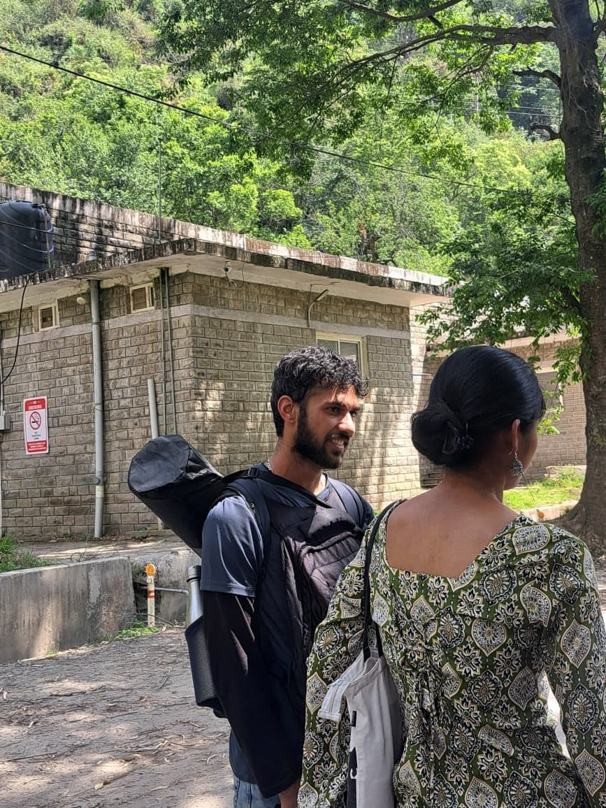
This is my last day at campus. Rahul, Rajan, Leesha Baldeep and Yash were there dropping me off. The mat on my back belongs to Suraj. He gifted it to me. It means a lot. I never thought that I had to carry those weights at last. The two circles. The dinners. The ice-creams. The obviousness. The inks. The paintings. The filled gaps. All filled. All dusted. All tamed. To go out. To go out to sit, but keep walking. Knowing, just by watching. Knowing before confessions. You know the coffesions, you know the simplicity after it. You know them.
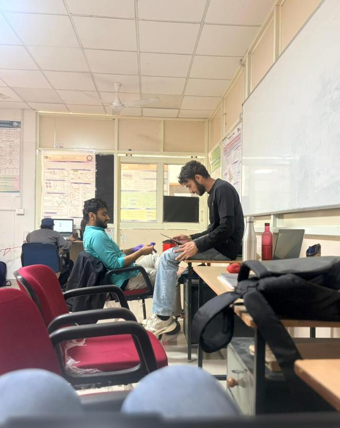
Rahul was searching for a quote and I was busy in reading article
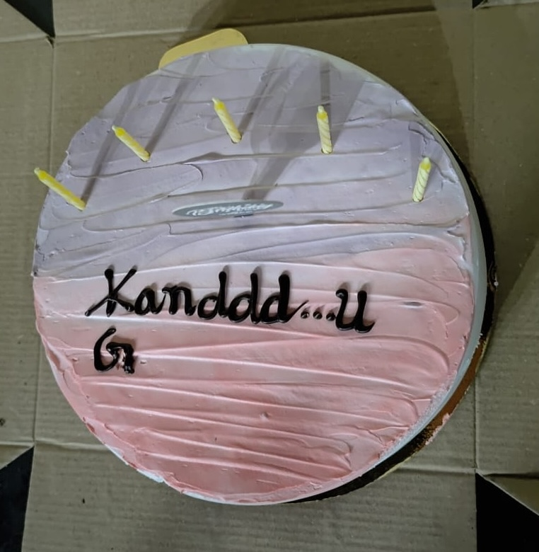
My birthday cake. They celebrated my birthday. We all had an exam the very next day. They cut out a small window for celebration. I don’t know whose idea the caption on the cake was, but for me it was the most creative one. It was a good day.
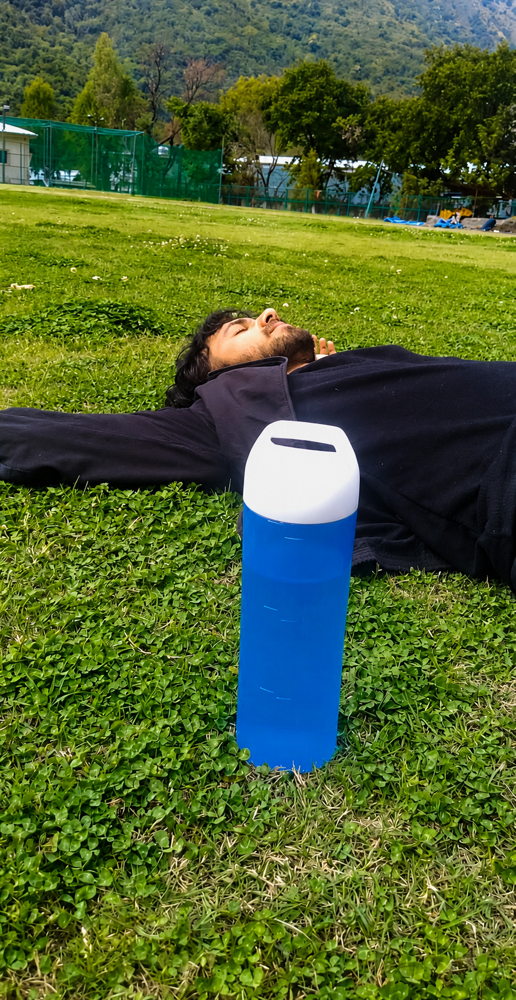
Resting. Everyone was home. Tushar got sick and went home after a few days. Just Pradeep and I were there. We ended up lying on the ground and falling asleep. We were so carefree. There was nothing in the world to worry about. We spent hours on that ground.
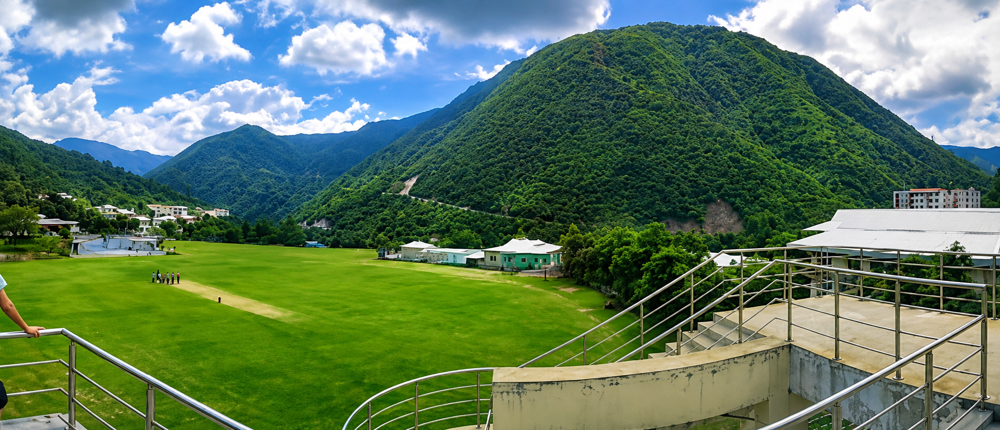
This is A4. The mountain in front is Griffon Peak. We made Maggi there with local children. It’s a huge mountain—you can see it from almost everywhere in IIT, even from Kamand, always appearing in a different angle. Locals burn the unwanted grass to clear the slopes and for oil extraction. When the fire spreads, the whole mountain glows. The view from A4 is soothing.
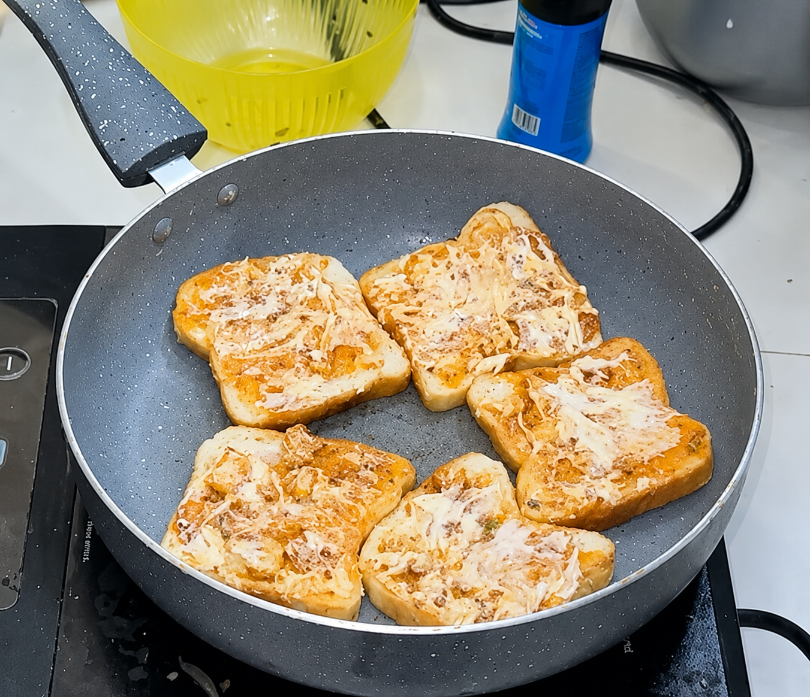
These are the breads cooked by Divya. She made three per person(I did not know). I thought two would be enough for one. They were so tasty I ate three. Something happened that same night(I had to go there)—otherwise I would’ve slipped the fourth one too without anyone noticing, though I never thanked her.
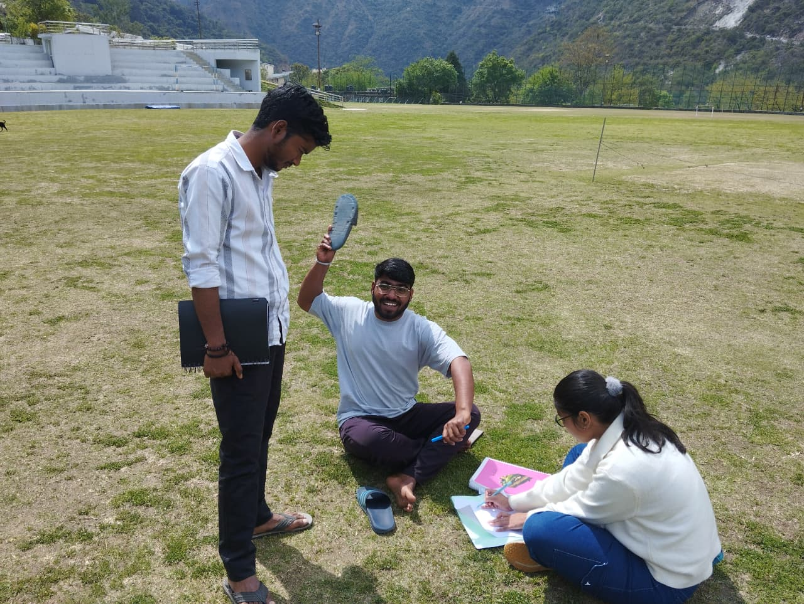
I heard koyal tones, and when I looked around, it was Tushar explaining theory to Pradeep for the viva before going to lunch. Pradeep wanted me to get away. I don’t know why—I was just helping him, explaining the benefits of eating before studying. I don’t know why, but after that he started showing me what he wears every day, though I can’t write here what he exactly said.
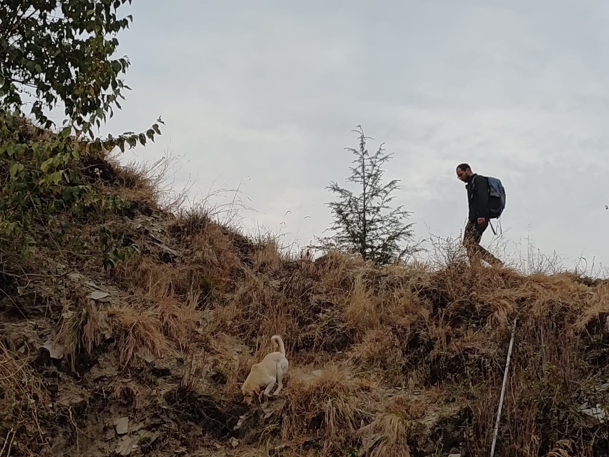
We spent hours walking and hiking. We had bought maggie, thinking we would cook it once we reached the top. We were going to Kanhar Peak. In the end, when the peak was just 20 meters away, we had to turn back. It was the second time we couldn’t reach it. This is the only peak around campus we could never make it to. This is Rohan looking for a good spot for maggie. There was a dog too who walked with us the whole journey, even following Rohan while he searched for a place, though in the end we dropped the idea of cooking.
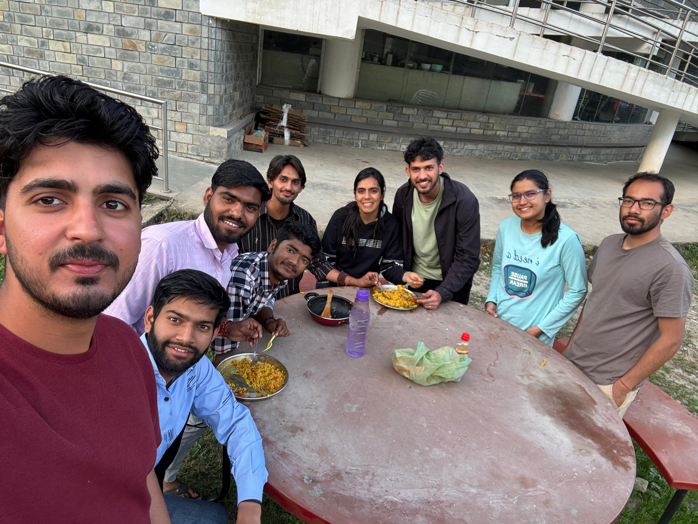
Khushi cooked maggie for us for the nth time. I don’t even remember how many times she has spared the time just to cook for us. This one was special because my friends were there to meet me. After that, we went for a walk to Peepul Point. That same evening, they left.
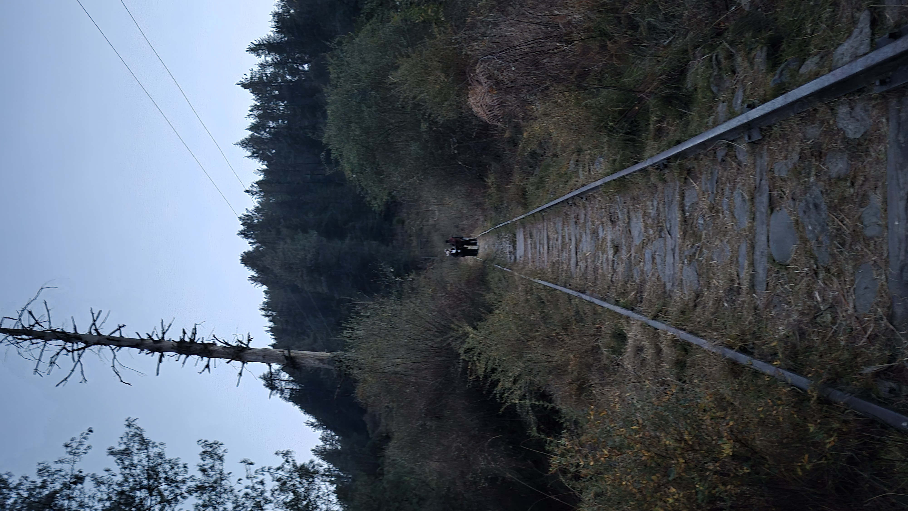
This is the view of Barot Valley. I had no interest in going there at first. I went only because they wanted me to go. I thought it was almost at the same height as our campus, so it would feel the same. Later, I found myself completely wrong. This is a place I can’t forget. Nothing here bothered us—from the travelling to the food prices. People here were nice. I can’t really tell you how peaceful this place was. This track line was made by Betty for transporting himself from his home to the valley (I’ll share a picture of Betty’s house). I stayed here for one night. Out of all the places I’ve visited, this is the only one I would love to go back to again.
This is also the hike we missed. We got to know later that the hill behind Betty’s house is where the trolley starts and carries him down to the valley—the same place from where this picture was taken.
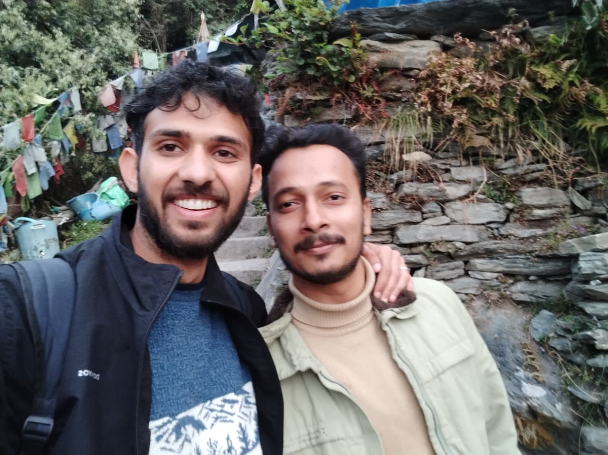
This is McLeodganj in Dharamshala. I don’t know why, but I was in a rush. We had only two hours, and we had to visit the waterfall, the market, and the monastery. I wanted to see all three. I went to the waterfall first with Suraj, Rahul, and Vikas. Next, I had to go to the market. I was walking fast, trying to cover everything. Rahul and Suraj kept telling me to slow down. This was it for them—this was the place. When I finally slowed down, they told me to stop, so I did. We sat there at one spot. I looked at both of them. They were so happy just sitting there that I dropped the plan of going anywhere else, and we stayed there for 45 minutes.
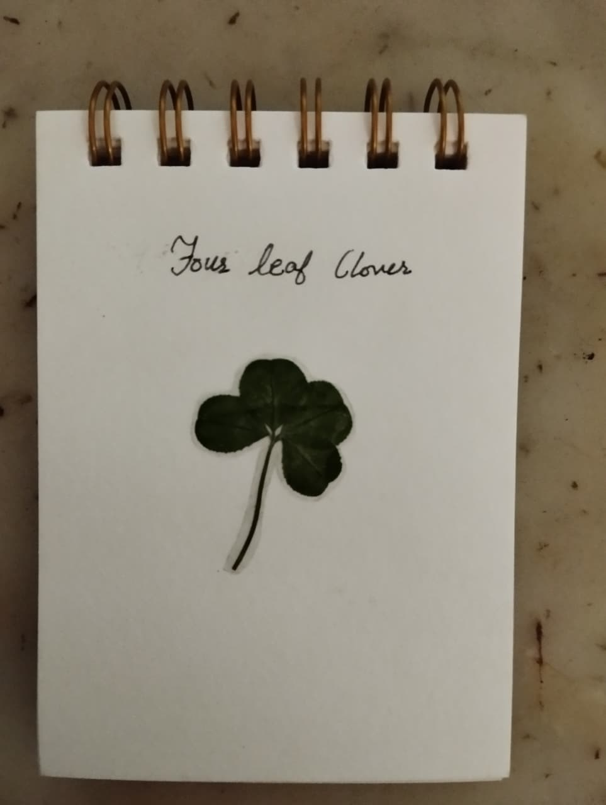
This is a four-leaf clover. Divya told everyone that it is special and brings luck. So everyone went mad, and they dug up every single 4-leaf clover and stole all the luck from the campus. Nikita laminated the leafs and handed them to us before leaving the campus. Now that they are done with 4 clover, they have started finding the 5-leaf clove.
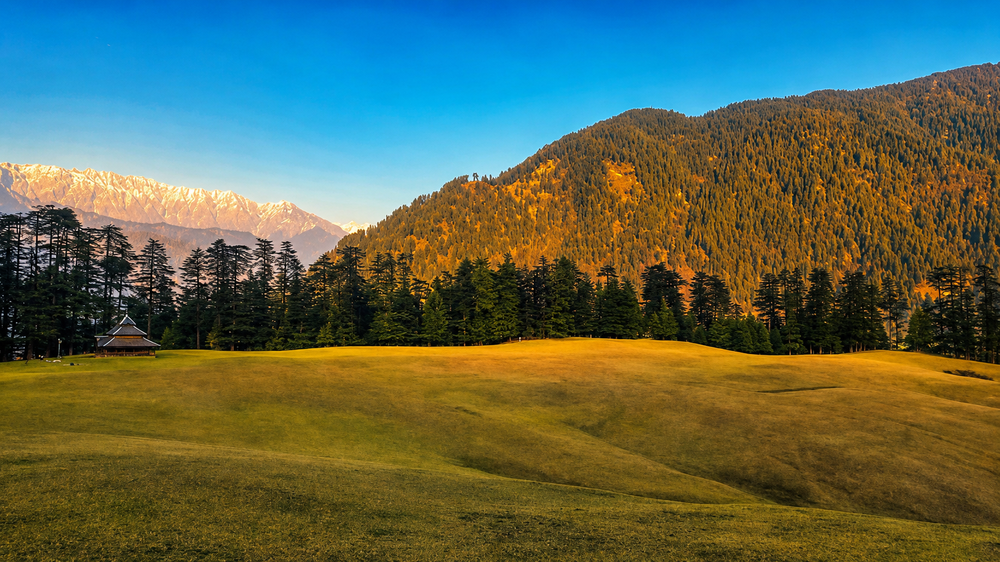
This is Shangarh Meadow. Completely offbeat. A corner of its own. Isolated. Deep forest. Trails winding around the meadows. Food and travel are challenges here, but there is so much to explore. I came in the off-season, when the place was almost deserted. It makes you wonder whether you are completely alone or simply in solitude. I walked for hours. Even a month would not be enough to explore all its trails.
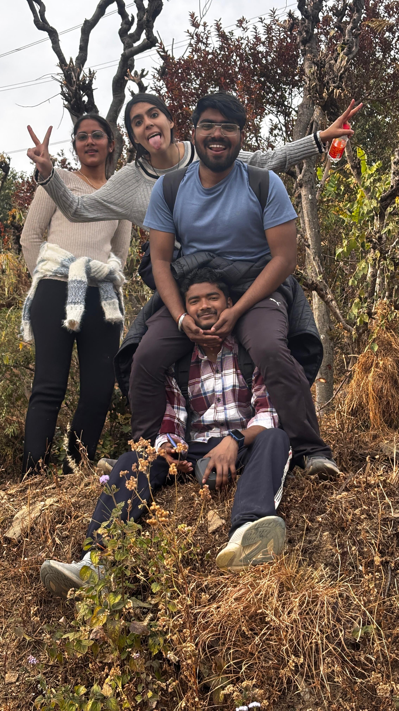
These are Khushi, Diksha, Deepak, and Pradeep. I honestly don’t remember what they were doing at that exact moment, but the picture is really cool. If I had to guess, we were waiting. We were on our way to Kanhar Peak, and Rohan had gone to some nearby houses to arrange water for us.
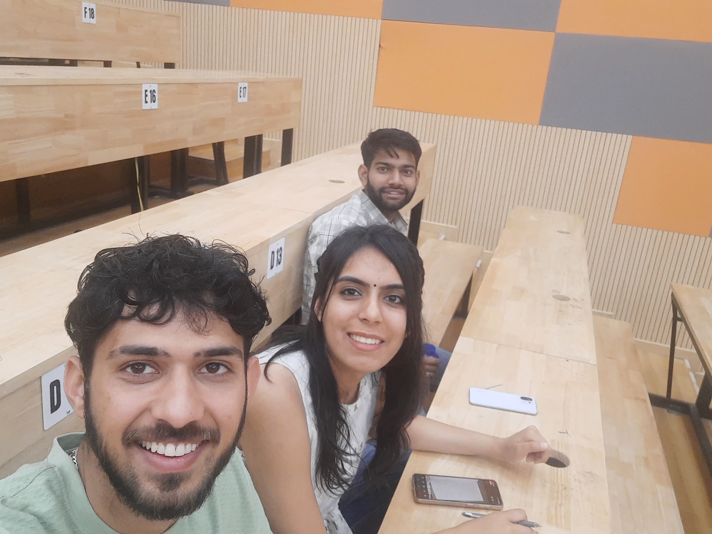
Me, Khushi and Ridham. She suggested me to join the Harry Potter quiz that was happening during Exodia (IIT’s annual event). I agreed and asked Ridham to join the same. We all divided the movies and watched. I made notes. I even revised them. But we did not clear even round one. It was fun. The event left all three of us giggling.
Maggi and Goodbyes
The Hike We Missed
Suraj and Rahul
Four leaf-clover
Meadow
Waiting for Rohan
Harry Potter Quiz